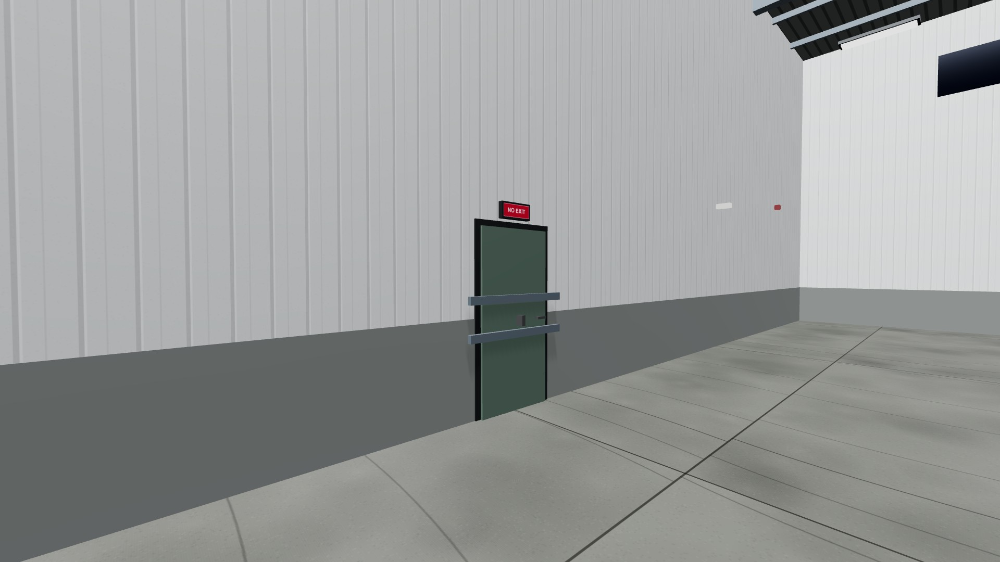

Pressure, one switch at a time
An alarm and a shake start the run. Stock then falls a few metres ahead on the walker’s own shortest route, always leaving another way out.
Camera shake has its own switch for anyone prone to motion sickness.

Stock falls onto your route

Power cut: emergency light only

Smoke builds up

Decoys: sealed exit, lift, shutters